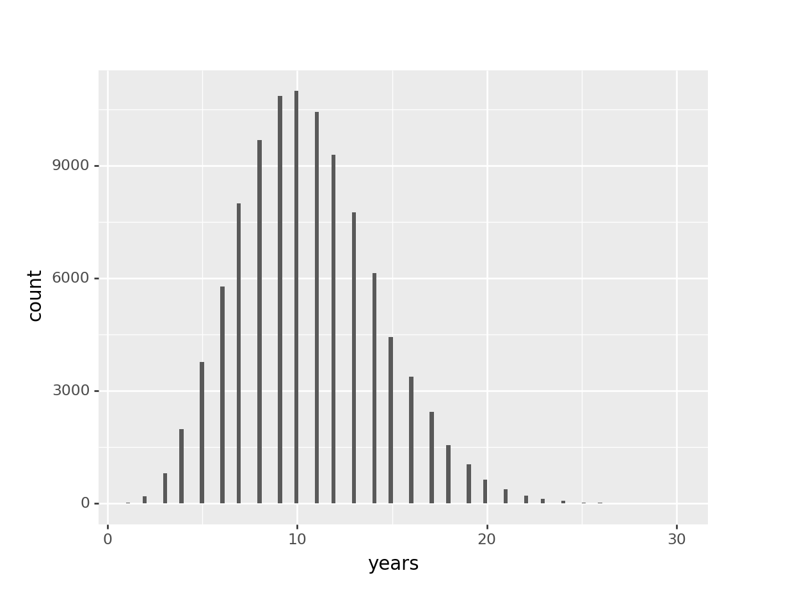

Will Zero Living Humans Have Walked on Another World?
For the Metaculus Question Will the number of living humans who have walked on another world fall to zero?
Based on this XKCD:

To create it, Munroe wrote a nifty little Python script. However, his script uses older actuarial data. Instead of just running it again, let’s do the same thing using fresher data.
Astronaut Lifespans
import pandas as pd
actuarial = pd.read_csv('https://docs.google.com/spreadsheets/d/e/2PACX-1vSV_IhE9E6Jc5x-3WRqFcSIAbRpUFUrWrYsIjMta-gCttJ4V4PoYKvQpdgAiDumRl4sm66MAlHfaNUR/pub?gid=0&single=true&output=csv')
men = actuarial[actuarial['sex'] == "Male"].loc[:,'pDeath'].to_list()The extant astronauts who’ve walked the moon are:
- Harrison Schmitt, 84
- Charles Duke, 84
- David Scott, 87
- Buzz Aldrin, 89
To determine their longevity, we’ll employ a simple Monte Carlo approach.
from random import random
from plotnine import *
trials = 100000
outcomes = []
for i in range(trials):
astronauts = [84, 84, 87, 89]
years = 0
while any(astronauts):
for j in range(len(astronauts)):
if astronauts[j]:
if random() < men[astronauts[j]]:
astronauts[j] = 0
else:
astronauts[j] = astronauts[j] + 1
years = years + 1
outcomes.append(years)
log = pd.DataFrame(data = {
"i": range(trials),
"years": outcomes
})
(ggplot(log, aes("years")) + geom_histogram())## <ggplot: (-9223372036805611064)>
##
## C:\Users\10298888\AppData\Roaming\Python\Python37\site-packages\plotnine\stats\stat_bin.py:93: PlotnineWarning: 'stat_bin()' using 'bins = 135'. Pick better value with 'binwidth'.
## warn(msg.format(params['bins']), PlotnineWarning)
Based on this, we can be around 50% certain that at least one of these people will be alive for another 10 years. But that’s only half the prediction; now we’ve got to figure out if that’s enough time to get back to the moon.
Return to the Moon
We have one data point for building a moon-landing program: Apollo. It’s goal of landing on the moon was famously announced by President Kennedy in 1961. The first lunar landing occurred in 1969, just over 8 years later. So, we have very strong evidence that the requisite lunar mission is possible. Unfortunately, the contractor-centric culture that’s overtaken the aerospace acquisitions process makes it seem much less achievable by today’s US Government. Not for want of trying, mind–NASA is currently targeting a 2025 landing with their Artemis 3 mission. Paired with the conspicuous absence of a technological arms race (in the style of the Cold War Space Race), it’s probably not going to be NASA that does the return trip. I’ll give it 10% by 2025, 50% by 2032.
Enter Elon Musk. Musk built a space-startup for the explicit purpose of getting humanity to Mars. But more recently, he’s added Lunar missions as an afterthought. Development on SpaceX’s interplanetary transit system is being funded at least in part by a commission from Yusaku Maezawa, who plans to use its maiden voyage to bring a team of artists into lunar orbit. Important note here: lunar orbit, not lunar landing. They’re targeting a 2023 mission. Musk hasn’t given a concrete target date for SpaceX’s initial, crewed lunar landings, but SpaceX’s Gwynne Shotwell has. She says they’re shooting for 2024. Again, I’m not certain I can generalize this prediction to a Musk Prediction, but if it were Musk saying it, it would actually happen closer to Summer of 2027.
2027 is 8 years from now. As a happy coincidence, we know that a lunar landing within 8 years is possible. Those 8 years cover around 40% of the probability space in which all the old lunar astronauts die. Thus my prediction (as of 2019-11-21) is 40%.